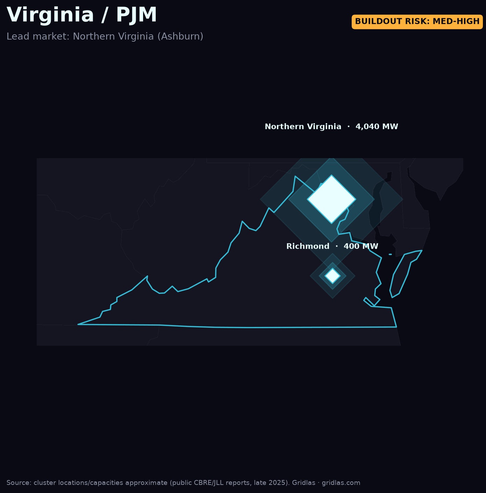

Home / Data centers by region / Northern Virginia
The largest data-center market on Earth — and the clearest picture of what concentrated AI load does to a single grid.
Northern Virginia — "Data Center Alley," centered on Loudoun and Prince William counties — is the densest concentration of data-center capacity on the planet. At roughly 4,040 MW of operating inventory, it is about 3.5× every secondary U.S. market combined, and it added on the order of 1 GW of new capacity in 2025 alone.

That density is exactly why the region is the bellwether for the AI power crunch. Dominion Energy has warned that data-center demand could double its system load within roughly 15 years, and new connections increasingly hinge on transmission build-out rather than generation alone. The constraint isn't whether power exists — it's getting it to one corner of one state fast enough.
For site selectors and investors, NoVA's vacancy sits near record lows and pre-leasing is the norm, pushing new demand toward Texas, Georgia, Arizona, and Ohio. Watching how Virginia's grid absorbs (or throttles) this load is the leading indicator for every secondary market following the same curve.
Want the full picture? The Gridlas report has the high-res maps, the ranked metro tables, and five regional deep-dives — built entirely from public EIA, LBNL & ERCOT data.
Get the report →